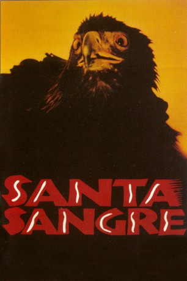

#4795 Santa Sangre
 
 IMDB-Wertung: 7.7 / 10
IMDB-Wertung: 7.7 / 10  Tomatometer: 85
Tomatometer: 85  Metascore: 0
Metascore: 0 
Der Magier Fenix wächst im Zirkus neben seiner Mutter, der Trapetzartistin Concha und seinem Vater, dem Großen Orgo auf. Als die taubstumme Alma in sein Leben tritt, verändert sich alles. Concha erwischt ihren Gatten eines Tages dabei, wie er sie mit der Tätowierten Frau, Almas Mutter, betrügt, und vergießt in rasendem Zorn Säure über seine Genitalien. Bevor Orgo sich das Leben nimmt, schneidet er ihr die Arme ab und überlässt sie ihrem Schicksal. Fenix, der das alles miterleben muss, landet in einer Nervenheilanstalt. Fortan weigert er sich zu sprechen oder Kleidung zu tragen - bis seine Mutter wieder auftaucht und einen blutigen Rachefeldzug startet, der mit der Tätowierten Frau bald ein erstes Opfer findet...
Jahr: 1989
Dauer: 123 Minuten
FSK: 18
Land: Italien Studio: Kinowelt FilmverleihTonspuren:
Untertitel: Englisch,
Auflösung: 1080p (1920x1032) Größe: 10055 MB
Genre: Drama, Fantasy, Horror, Thriller
Regisseur: Alejandro Jodorowsky
Drehbuch: Kacey Arnold
Soundtrack:
Darsteller:
- Blanca Guerra als Concha
- Guy Stockwell als Orgo
- Thelma Tixou als The Tattooed Woman
- Sergio Bustamante als Monsignor
- Axel Jodorowsky als Fenix
- Sabrina Dennison als Alma
- Adan Jodorowsky als Young Fenix
- Faviola Elenka Tapia als Young Alma
- Teo Jodorowsky als Pimp
- Mary Aranza als Fat Prostitute
- Jesús Juárez als Aladin
- Gloriella als Rubi
- S. Rodriguez als The Saint
- Zonia Rangel Mora als Trini
- Joaquín García Vargas als Box-office Attendant
- Teo Tapia als Business man
- Edgar E. Jiménez Nava als Monsignor's Chauffeur
- Jacobo Lieberman als Monsignor's Secretary
- Héctor Ortega als Doctor
- Brontis Jodorowsky als Orderly 1
- Valérie Crouzet als Orderly 2
- Óscar Serafín Álvarez als Soldier 1
- Billy Motton als Soldier 2
- Hilario 'Popitekus' Vargas als Wrestler 1
- Guadalupe 'TNT' Aguilar als Wrestler 2
- Arturo 'Rinoceronte' Contreras als Wrestler 3
- Gustavo Aguilar Tejada als Beggar
- Roger Fayard Arroyo als Beggar
Datei: X:\1989\Santa Sangre (1989, FSK18, 1920x1032).mkv seit 18.11.2016
Festplatte: HD 1987-1991
 Es gibt insgesamt 54 Filme in der Gruppe '1989'
Es gibt insgesamt 54 Filme in der Gruppe '1989'